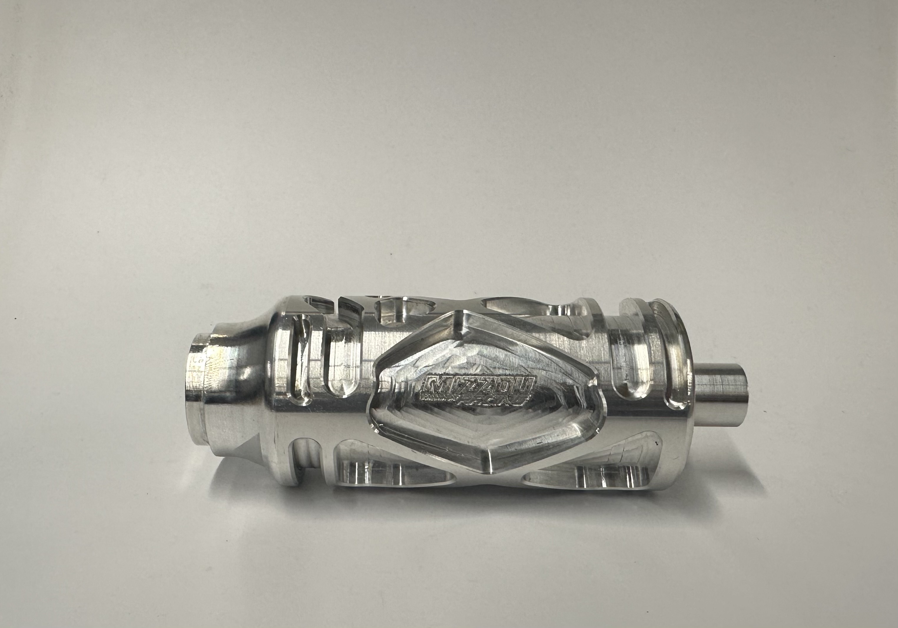
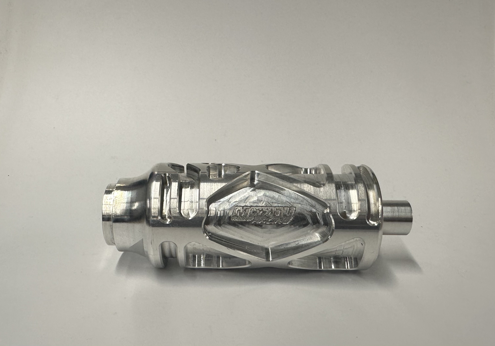
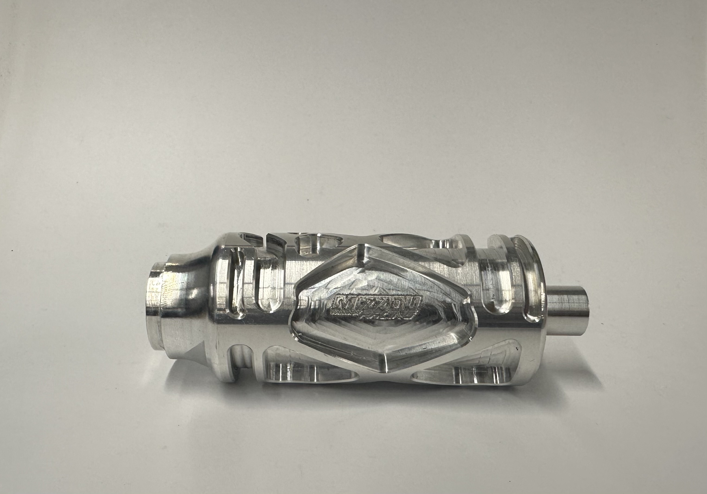

We run a Honda CBR600RR engine. Our Powertrain/Drivetrain system contains a custom intake, exhaust, fuel cell, dry sump oil system, and pneumatic shifting system. Our team designs and manufactures all of these components in house. We test and tune the various components on our chassis dynamometer, as well as on track.

Ben is a senior mechanical engineering major, and is also the Chief Mechanical Engineer of Mizzou Racing. He joined the team in Fall 2022. This season, Ben’s main design project is a custom “Shift Drum” for the gearbox inside the CBR. He is also a member of our welding team and plays a huge role in chassis and accumulator fabrication.
- Ben Higgins